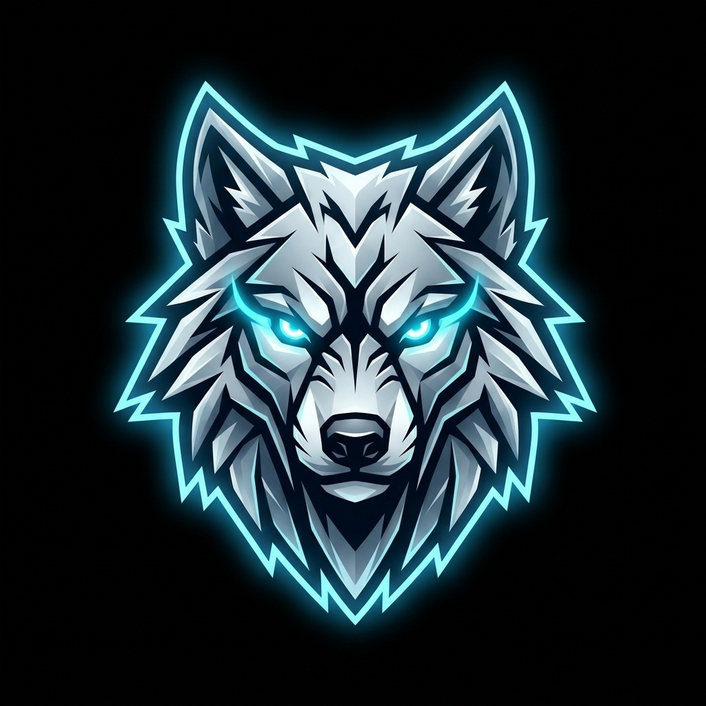

Forge Relentless Discipline
With Your Pack
A dedicated, anti-cheat fitness accountability bot engineered for private Discord communities. Track the 5 foundation calisthenics disciplines, parse workouts in milliseconds with dual AI (Groq & Gemini), protect streaks with Frost Shields, and ascend a 12-level pack hierarchy — 100% self-hosted on your own infrastructure with total data sovereignty.
(Anti-Cheat Math)
(Saitama Protocol)
(0 → 12,000 pts)
(Groq NLP + Gemini)
(Local SQLite Sovereignty)
Why This Bot Exists
Most fitness apps fail because they trap you in solitary confinement, charge subscription paywalls, and encourage vanity binging. Winter Arc was engineered for a completely different human reality.
Why Mainstream Habit Apps Fail
- Solitary Isolation: Logging reps into a private phone screen provides zero tribal peer pressure or shared celebration. When discipline dips, silence allows you to quit unnoticed.
- Subscription Bloat & Paywalls: Essential tracking, basic streaks, and simple charts are gated behind recurring monthly charges and manipulative gamification.
- Vanity Binging & Cheating: Open-ended apps let users log 1,000 pushups in a day to spike their ego, burn out by week two, and abandon the challenge entirely.
- Data Commodification: Your health logs, habits, and private routines are mined, tracked, and stored on third-party ad networks.
Peer Accountability Inside Discord
- Tribal Peer Pressure: The bot lives inside your private Discord community. Your friends and pack see every rep, every clean streak, and every missed day.
- Anti-Cheat 500 Daily Point Ceiling: Rigorous point math. Max 100 points per discipline. Consistency over 90 consecutive days always triumphs over erratic binging.
-
Zero Friction & Sub-Second AI: No apps to download. Log reps in seconds with slash commands or plain English via Groq LLM parsing (
/quick). - 100% Data Sovereignty: You own the bot, the code, and the SQLite database. Zero external trackers, zero recurring subscriptions, zero vendor lock-in.

Disappear in Silence. Emerge Undeniable.
The Winter Arc is not a 7-day social media gimmick. It is an intentional seasonal lockdown spanning October through January. When mornings are pitch black, freezing rain sets in, and the world retreats into comfortable excuses and holiday food, the psychological barrier to train multiplies.
That friction is your leverage. By eliminating dopamine distractions, stacking 500 points of daily calisthenic volume, and submitting your daily output to your peers, you forge a standard of psychological steel that outlasts the winter.
“When the freeze sets in, excuses multiply. That is the exact moment the pack pulls away.”
The Five Seasonal Phases
Structured to take you from initial habit shock to permanent identity integration.
The Trial & Calibration
Test-drive the 5 foundation disciplines, eliminate logistical excuses, calibrate sleep schedules, set up your Discord bot, and get your server enrolled before October 1.
First Frost: The Shock
The official kickoff of the 90-day arc. Shock the nervous system into daily volume, conquer early muscle soreness (DOMS), cut doomscrolling, and lock in your first Perfect Day streak.
The Hunt: The Dark Tunnel
Initial novelty fades. The days turn bitter, mornings stay dark, and willpower burns out. Cold, mechanical execution replaces emotion. The work gets done simply because it is non-negotiable.
The Endgame: Real Winter Arc
The ultimate test. End-of-year fatigue, holiday parties, and freezing temperatures collide. While the rest of the world quits, the pack locks shields, protects streaks, and ascends to Apex rank.
Aftermath: The Sovereign Baseline
While the masses scramble to write fragile New Year resolutions, you emerge already transformed. The 90-day arc concludes, but your discipline is now your permanent lifestyle standard.
Engineered For Relentless Performance
Every command, scoring formula, and AI capability is calibrated to eliminate excuses, reward consistency, and build athletic endurance.
The Five Foundation Disciplines
Modelled after the legendary Saitama protocol — 100 push-ups, 100 sit-ups, 100 squats, and a 10 km run — amplified with 100 pull-ups to forge comprehensive calisthenic upper-body pulling strength.
High Ceiling. Zero Barrier. Every Rep Counts.
500 points a day is a brutal mountain — and that is the point. You are not expected to hit peak volume on day one. Whether you can only grind out 10 push-ups, 2 pull-ups, or jog a single kilometer today, log it. Every single repetition earns points toward your pack rank. The Winter Arc is about locking in, embracing the cold, and stacking volume in silence until you become undeniable.
Maxing out all 500 daily points earns Perfect Day status (★) and accelerates your rank ascension.
Dual Logging Engine
Log progress incrementally across multiple workout sessions throughout the day with /log, or directly override/correct your daily total with /set (or set to 0 to fix an error).
/log task:pushups amount:25
/set task:running amount:5.0
/tasks
AI Natural Language Logging (Groq)
Sub-second natural language workout extraction via Groq LLM parsing. Type what you did in plain conversational language — the engine extracts reps, splits distances, maps to active disciplines, and logs immediately.
/quick "did 45 pushups and ran 3.5km in the rain"
/quick "knocked out 20 pullups and 50 squats"
Custom Workout & Deep Work Evaluator (Gemini)
Discipline is physical and mental. Submit custom workouts (Surya Namaskaras, gym sets, skipping, yoga) or deep technical work via /grind. Google Gemini evaluates friction and awards bonus points (+5 to +50 pts, 1x/day). Core checklist tasks are excluded to prevent double-counting.
/grind "15 Surya Namaskars, 3x12 bicep curls, and 2h LeetCode trees"
Tribal Governance & Council Trials
Authenticity over ego. When ungrounded buzzword bingo is submitted, Amarok calls it out directly and summons the Council in channel. Any brother can also challenge questionable logs via /accuse @member (protected by an Honor Code modal). The pack votes live with interactive buttons and courtroom GIF verdicts.
/accuse target:@Warrior
/admin grind what:block member:@Warrior days:3 reason:"Fluff"
Streak Shields & Injury Defense
Legitimate rest and illness are real. Rather than punishing recovery with an unrecoverable streak reset, members earn Streak Shields every 7 active days. Protect active streaks with /shield use.
/shield status
/shield use target:today reason:"High fever recovery"
Automated Cadence (Zero Spam)
Scheduled background broadcasts run strictly inside the designated text channel (via /admin set_channel) without cluttering other server channels:
05:00 ISTMorning Kickoff & Targets + Personal Morning AI DMs16:30 ISTMidday Pack Accountability Pulse + Personal Afternoon DMs21:00 ISTEvening Streak Warning (3h remaining) + Personal Evening DMs00:00 ISTMidnight Podium Finalization & RolloverSun 10:00Winter Arc Weekly Recap & Volume Podium
Dynamic Discipline Administration
Server admins can add custom exercises on the fly with /admin task_add, toggle existing tasks on or off, configure dedicated announcement roles with /admin set_role, and sync commands without touching code.
/admin task_add name:"Plank" goal:300 unit:"sec" max_points:100
/admin sync clean:True
Experience The Bot In Discord
See exactly how Winter Arc looks and behaves inside your server. Toggle the tabs below to preview real bot embeds.
The 12-Tier Discipline Hierarchy
Calibrated strictly around a 90-day arc. Apex Rank requires 12,000 lifetime points, demanding a relentless average of 133+ points stacked every single day.
| Tier | Rank Title | Point Range | Daily Pace Requirement | Focus & Identity |
|---|---|---|---|---|
| 01 | Initiate | 0 – 499 pts | Day 1 – 3 | First steps on the board. Overcoming initial inertia. |
| 02 | Novice | 500 – 1,199 pts | Day 4 – 8 | Surviving week one. Developing the daily habit loop. |
| 03 | Challenger | 1,200 – 1,999 pts | Day 9 – 15 | Routine taking root. Soreness fading, consistency building. |
| 04 | Dedicated | 2,000 – 2,999 pts | Day 16 – 22 | Body adapting. Rhythm locked in across morning and evening. |
| 05 | Disciplined | 3,000 – 4,199 pts | Day 23 – 31 | Month 1 completed. Daily execution transitioning to autopilot. |
| 06 | Hardened | 4,200 – 5,499 pts | Day 32 – 41 | Entering November tunnel. Execution without negotiation. |
| 07 | Iron | 5,500 – 6,999 pts | Day 42 – 52 | Halfway mark reached. Unshakable physical and mental resilience. |
| 08 | Vanguard | 7,000 – 8,499 pts | Day 53 – 63 | Month 2 milestone. Standard of execution recognized by the pack. |
| 09 | Relentless | 8,500 – 9,799 pts | Day 64 – 73 | Rain, freezing cold, or fatigue — volume is non-negotiable. |
| 10 | Veteran | 9,800 – 10,799 pts | Day 74 – 81 | Final stretch into December. Elite standards maintained daily. |
| 11 | Master | 10,800 – 11,999 pts | Day 82 – 89 | Apex within reach. Top-tier execution witnessed by all. |
| 12 | Apex | 12,000+ pts | Day 90+ | Peak Mastery Conquered |
Slash Commands
Every command uses native Discord application commands with parameter autocompletion, instant ephemeral error handling, and rich embed responses.
/reminders.Fork & Self-Host Your Own Bot
Winter Arc is 100% open-source and engineered to run on your own private infrastructure. Follow this complete step-by-step master guide to launch your private pack instance.
Fork & Clone Repository
Begin by creating your own fork on GitHub, then clone it to your local machine, VPS, or server:
# 1. Clone your forked repository
git clone https://github.com/YOUR_USERNAME/winter-arc-discord-bot.git
# 2. Enter repository directory
cd winter-arc-discord-botDiscord Developer Portal Setup
Create your application and retrieve credentials from Discord:
- Open the Discord Developer Portal and click New Application.
- Under the Bot tab, click Reset Token and copy your
DISCORD_TOKEN. - Under Privileged Gateway Intents, enable both:
- Server Members Intent (Required for tracking enrolled pack members)
- Message Content Intent (Required for command processing)
- Under OAuth2 → URL Generator, select scopes
bot&applications.commands, grant Send Messages, Embed Links, Manage Roles, and invite the bot to your server.
Configure Environment Variables (.env)
Copy the example template to create your production configuration file:
cp .env.example .env
Fill in your configuration variables inside .env:
# ==============================================================
# WINTER ARC BOT CONFIGURATION
# ==============================================================
# Required: Bot Token from Discord Developer Portal
DISCORD_TOKEN=your_bot_token_here
# Required for /nuke: SHA-256 hash of secret 2FA answer
NUKE_SECURITY_HASH=ae50ad81a2d4006e372c0bd3220f24c377345455d0e980c3f0d94f0e5faf2561
# Optional: Default server role & channel IDs (can also be set in-server via /admin)
WINTER_ARC_ROLE_ID=
WINTER_ARC_CHANNEL_ID=
# Optional: Google Gemini API Key for /grind deep work scoring (free at aistudio.google.com)
GEMINI_API_KEY=your_gemini_api_key_here
# Optional: Groq API Key for /quick natural language parsing & failover (free at console.groq.com)
GROQ_API_KEY=your_groq_api_key_here
# Optional: Groq inference model (defaults to llama-3.3-70b-versatile)
GROQ_MODEL=llama-3.3-70b-versatileChoose Your 24/7 Hosting Platform
Discord bots require a continuous Python process maintaining an active WebSocket gateway connection. Pick your preferred environment below:
Deploying on Wispbyte (or any Pterodactyl Panel)
Wispbyte provides low-cost 24/7 Discord bot server containers running Python with automatic crash recovery, web console monitoring, and integrated Git deployment. Select your preferred deployment method below:
In your Wispbyte dashboard, select Create Server and choose the Python / Generic Bot egg (Python 3.11+ recommended).
Navigate to the GitHub Integration tab in your server sidebar and configure your repository fields:
- Repository URL: Enter your GitHub repository (e.g.
https://github.com/vishnunandan555/winter-arc-discord-bot) - Branch:
main - Authentication: Leave blank for public repositories. (Only needed for private repos: enter your GitHub Username and a Personal Access Token with repo read scope).
- Auto Update on Startup: Toggle ON to automatically pull new commits whenever your server boots or restarts.
Click the Clone / Pull button near the top of the GitHub page. Wispbyte will clone your repository directly into the server directory.
Git purposely ignores secret files like .env and databases (*.db) for security. Go to File Manager in your panel, click New File, and save your credentials as .env:
DISCORD_TOKEN=your_token_here
APPLICATION_ID=your_id_here
PREFIX=!Database Safety: Live SQLite databases (winter_arc.db) are untracked by Git, so pulling new commits will never overwrite user streaks or data.
In the Startup tab, ensure Startup Command is set to python bot.py. Then navigate to Console and click Start. The container installs dependencies from requirements.txt automatically and boots 24/7.
On your local computer inside the project root, run our automated packaging script:
python create_deploy_zip.pyIncluded Files: Packages all bot code, cogs, UI, and includes your local .env while automatically stripping databases (*.db), virtual environments, and caches (~130 KB).
In your Wispbyte server's File Manager, click Upload and select bot_deploy.zip. Once uploaded, click the three dots icon next to the file and choose Unarchive / Extract.
If your container does not auto-install packages on startup, open the web console and execute:
pip install -r requirements.txtUnder the Startup tab, verify Startup Command is python bot.py. Click Start on the console. The bot initializes winter_arc.db automatically and connects to Discord!
Deploying on Linux VPS (Ubuntu / Debian Systemd)
Ideal for full sovereignty on DigitalOcean, Hetzner, AWS EC2, Linode, or any self-managed Linux server.
git clone https://github.com/YOUR_USERNAME/winter-arc-discord-bot.git
cd winter-arc-discord-bot
python3 -m venv .venv
source .venv/bin/activate
pip install -r requirements.txt
cp .env.example .env
nano .env # Paste your DISCORD_TOKEN and keyssudo nano /etc/systemd/system/winter-arc.service
# Paste the following:
[Unit]
Description=Winter Arc Discord Bot Service
After=network.target
[Service]
Type=simple
User=ubuntu
WorkingDirectory=/home/ubuntu/winter-arc-discord-bot
ExecStart=/home/ubuntu/winter-arc-discord-bot/.venv/bin/python bot.py
Restart=always
RestartSec=10
EnvironmentFile=/home/ubuntu/winter-arc-discord-bot/.env
[Install]
WantedBy=multi-user.targetsudo systemctl daemon-reload
sudo systemctl enable winter-arc
sudo systemctl start winter-arc
# Tail live output logs
sudo journalctl -u winter-arc -fDeploying with Docker & Docker Compose
Containerized deployment with persistent volume mounting ensures your SQLite database (winter_arc.db) is safely preserved across restarts.
FROM python:3.11-slim
WORKDIR /app
COPY requirements.txt .
RUN pip install --no-cache-dir -r requirements.txt
COPY . .
CMD ["python", "bot.py"]version: '3.8'
services:
winter-arc-bot:
build: .
container_name: winter_arc_bot
restart: always
env_file:
- .env
volumes:
- ./winter_arc.db:/app/winter_arc.db
- ./logs:/app/logsdocker compose up -d --build
docker compose logs -fDeploying on Cloud (Render / Railway)
Discord bots require an uninterrupted background worker connection.
On Render or Railway, choose Background Worker (do not select Web Service, as Discord bots do not open HTTP web ports).
- Build Command:
pip install -r requirements.txt - Start Command:
python bot.py
In the platform settings, add DISCORD_TOKEN and BOT_TIMEZONE, then trigger deploy.
Server Onboarding & Channel Setup
Once your bot connects and comes online, execute these setup commands in your Discord server:
/admin set_channel channel:#winter-arc
/admin set_role role:@Winter Arc
/enroll
/test_reminder type:morning
Data Sovereignty & SQLite Design
Engineered with a clean Data Access Object (DAO) architecture. All calculations, streaks, and shields run locally on your server.
Local SQLite Storage
All member data, timestamps, volume counts, and streak milestones reside in a single local file: winter_arc.db. Backing up your entire server takes one command: cp winter_arc.db backup.db.
Zero Telemetry & Privacy
No analytics SDKs, no tracking pixels, and no external databases. The bot communicates solely with Discord's official Gateway and your optional LLM providers (Groq/Gemini).
Fault-Tolerant Scheduling
The scheduler runs an evaluation ticker loop every 30 seconds pinned to Asia/Kolkata (or your custom timezone in BOT_TIMEZONE). Even if restarted, bot state flags prevent duplicate broadcasts.
Common Questions & Answers
Everything you need to know about the Winter Arc bot, scoring math, AI workout parsing, and self-hosting.
What is the Winter Arc Discord Bot?
The Winter Arc Discord Bot is an open-source, self-hosted fitness and habit accountability ecosystem built with Python 3.11+, discord.py 2.x, and SQLite. It replaces solitary, subscription-heavy habit apps by moving daily discipline tracking directly into your private Discord community with your closest friends or training pack.
How does the anti-cheat 500 daily point ceiling work?
To eliminate erratic vanity logging and stop users from burning out by logging 1,000 push-ups in a day, points are mathematically capped at 500 points per day across 5 core disciplines: Push-ups (100 pts), Pull-ups (100 pts), Squats (100 pts), Sit-ups (100 pts), and Running (100 pts). Reaching the top Apex rank requires stacking consistent volume across all 90 days rather than single-day binge workouts.
How do the Groq and Google Gemini AI integrations work?
The bot features two built-in AI capabilities:
- Groq AI (
/quick [text]): Parses natural language workout summaries in milliseconds viallama-3.3-70b-versatile(e.g. "ran 5km and did 40 pushups") into structured discipline logs. If no API key is provided, an internal regex parser acts as an automatic fallback. - Google Gemini (
/grind [text]): Evaluates custom physical workouts (Surya Namaskaras, gym, yoga) or cognitive deep work to award verified bonus points (+5 to +50 pts, capped at 1x per day; core disciplines excluded). Backed by an automated sub-second Groq fallback with geo-block circuit breaker to prevent downtime.
What is the Council Trial system and how does /accuse work?
To maintain authentic standards and eliminate unearned fluff, Winter Arc includes a democratic community verification system:
- Automated AI Sentinel: When a user logs buzzword bingo or ungrounded claims via
/grind, Amarok credits token effort points (+10 pts) and immediately auto-summons the Council. - Peer Challenge (
/accuse @member): Any enrolled warrior can challenge an unverified grind log. Before summoning the Council, an ephemeral modal enforces the Winter Arc Honor Code to prevent jealousy or petty rivalry. - Democratic 10-Minute Vote: Enrolled pack members vote live via interactive buttons ("🔨 Guilty" vs "🛡️ Innocent") with courtroom GIFs. If the accusation is confirmed guilty, points are stripped; otherwise, the log stands.
- Admin Disciplinary Control: Administrators can run
/admin grind block|unlockwith custom durations and reasons to enforce pack standards.
What is the Streak Shield defense mechanism?
Real life includes legitimate rest, travel, and illness. For every 7 consecutive active days (at least 30 points per day), members earn 1 Streak Shield (inventory capped at 3). Running /shield use [target] [reason] protects your streak during a recovery day without resetting your progress to zero.
Can I self-host this bot on Wispbyte, a Linux VPS, or Docker?
Yes. Winter Arc is engineered specifically for turnkey self-hosting:
- Wispbyte / Pterodactyl: Direct GitHub repo pulling with auto-update on restart, or upload a pre-packaged
bot_deploy.zipbundle. - Linux VPS (Systemd): Run on Ubuntu/Debian using the included production systemd service definition.
- Docker: Run
docker compose up -dwith the includedDockerfileanddocker-compose.ymlfor persistent SQLite storage. - Render / Railway: Deploy as a continuous Background Worker process.
Is the Winter Arc Discord Bot completely free and open-source?
Yes, 100% free under the permissive MIT License. There are zero subscription paywalls, no paid tiers, and no advertisements. You maintain full data sovereignty over your private SQLite database (winter_arc.db).
How do I enroll members and configure the bot in Discord?
Once online, an administrator runs /admin set_channel channel:#winter-arc to isolate all automated daily broadcasts into one dedicated channel, and /admin set_role role:@Winter Arc to set the notification role. Members then simply type /enroll to join the pack and begin logging workouts.